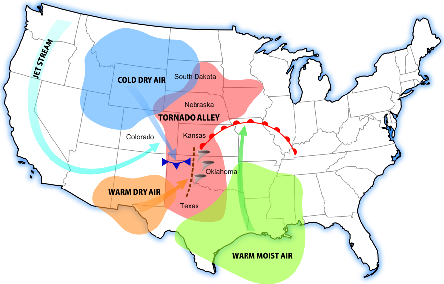
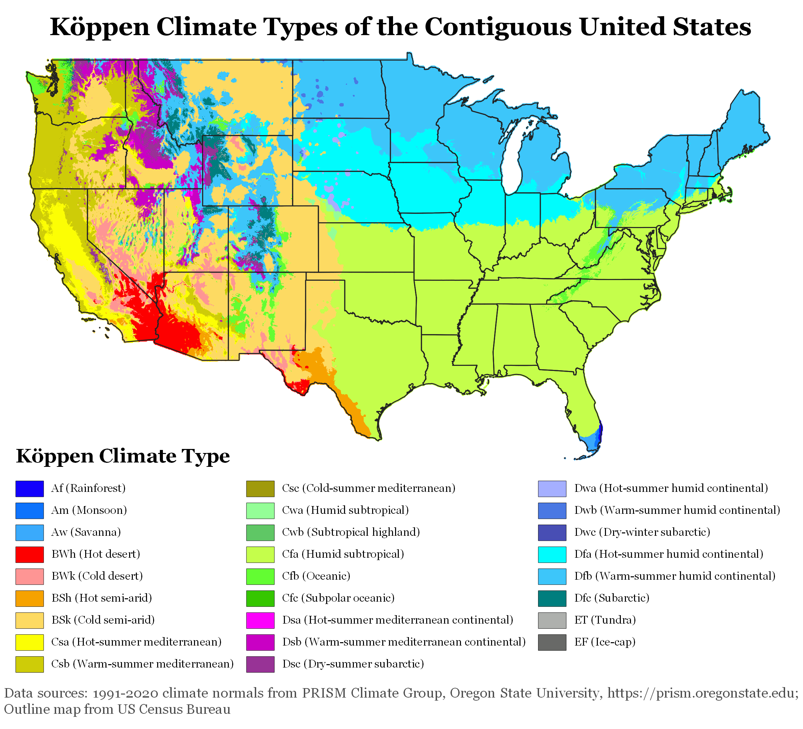
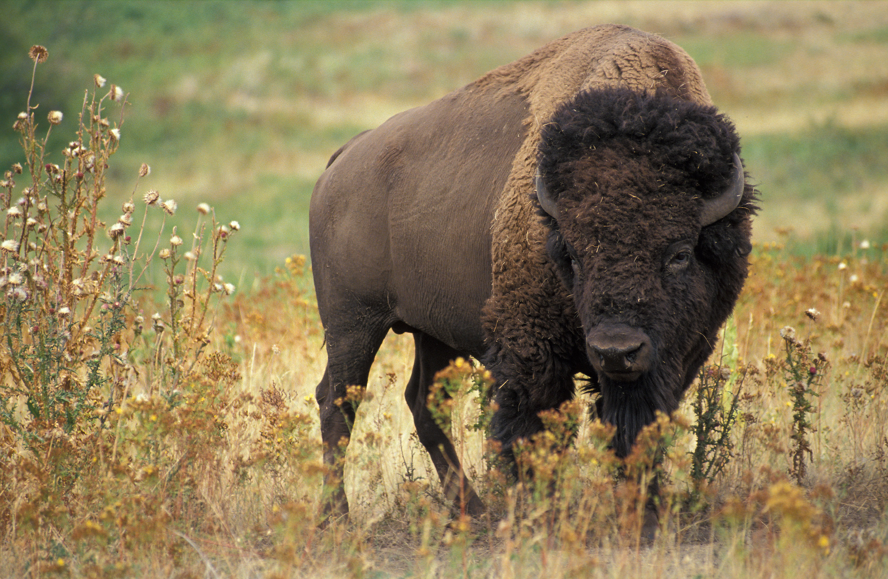
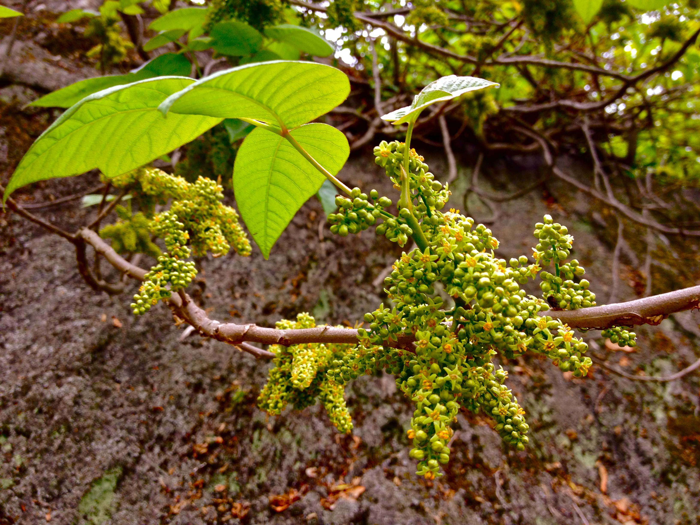

An investigation of global atmospheric circulation, synoptic storm systems, Köppen climate regions, terrestrial biomes, and native biogeography across the United States.
1. Global Position & Weather Patterns
The United States occupies a vast latitudinal expanse from approximately 24°N in Florida to 71°N in Arctic Alaska, with tropical island territories extending down to 19°N in Hawaii. This broad geographic span places the nation directly across three primary planetary atmospheric cells: the Hadley Cell, the Ferrel Cell, and the Polar Cell.
Circulation Cells, Wind Belts & Jet Streams
The Ferrel Cell & Prevailing Westerlies: The contiguous United States lies primarily within the mid-latitude Ferrel Cell (30°N–60°N). Surface winds blow predominantly from the west toward the east, steering mid-latitude extratropical cyclones, migrating anticyclones, and frontal boundaries across the continent.
Hadley Cell & Subtropical Ridge: The descending limb of the Hadley Cell produces the persistent Subtropical High-Pressure belt near 30°N latitude. This descending, dynamically compressed air suppresses cloud development, creating the hyper-arid deserts of the American Southwest and steering the easterly Northeast Trade Winds that govern Hawaii and the Caribbean.
The Polar Front & Polar Jet Stream: At the convergence boundary between cold polar air and warm subtropical air, steep horizontal temperature gradients create the Polar Jet Stream in the upper troposphere (30,000–39,000 ft). Fluctuations (Rossby waves) in the jet stream direct winter storm tracks, draw moisture from the Gulf of Mexico, and occasionally displace the circumpolar vortex southward, sending Arctic air deep into the southern states.

Figure 1: Synoptic setup of North American tornadogenesis: collision of cold Canadian cP air, hot dry Mexican cT air, and warm moist Gulf mT air along the dryline.

Figure 2: High-resolution Köppen-Geiger climate classification map of the contiguous United States based on modern 1991–2020 climatological normals.
Global Precipitation Patterns
Precipitation distribution across the United States is governed by topography and proximity to maritime moisture sources. The Pacific Coast receives heavy winter precipitation from moist marine air masses forced upward by coastal cordilleras (orographic precipitation). In contrast, intermountain basins remain arid due to rain shadows. East of the Rocky Mountains, the primary moisture pump is the low-level jet drawing warm, humid maritime tropical ($mT$) air from the Gulf of Mexico, producing a stark east-west precipitation gradient across the Great Plains.
2. Severe Weather Phenomena
Due to its unique continental physiography—lacking east-west mountain barriers—the United States experiences the highest frequency of violent convective storms, tornadoes, and severe atmospheric hazards of any nation on Earth.
Common Severe Weather Types & Historical Case Studies
Tornadoes & Severe Supercells: In the Great Plains and Deep South ("Tornado Alley" and "Dixie Alley"), cold Canadian polar air ($cP$) collides violently with warm, buoyant Gulf of Mexico air ($mT$), capped by dry elevated air from the Southwest ($cT$). Strong vertical wind shear provided by the jet stream induces storm rotation. Historical Example: The 2011 Super Outbreak (April 25–28, 2011) generated 360 confirmed tornadoes across the southern and eastern U.S., including multiple EF5 vortices, killing 324 people and causing over $12 billion in destruction (NOAA, 2021).
Tropical Cyclones: Atlantic and Gulf hurricanes form over warm ocean waters (>26.5°C) and strike coastal margins with extreme storm surges and inland freshwater flooding (e.g., Hurricane Katrina in 2005 and Hurricane Ian in 2022).
Blizzards & Polar Vortex Outbreaks: Extreme winter storms fueled by Arctic high-pressure systems. During the February 2021 North American Winter Storm (Uri), deep polar air plunged to the Gulf of Mexico, dropping temperatures in Texas below 0°F (-18°C), causing widespread power grid failure and over 240 fatalities.
Wildfires & Foehn Winds: Semi-arid western biomes experience severe wildfires driven by autumn downslope adiabatic winds (such as the Santa Ana winds in Southern California and Diablo winds in Northern California), exemplified by the record-breaking 2020 Western wildfire season that burned over 10 million acres.
3. Köppen Climate Classification
The United States features nearly every major climate regime recognized by the Köppen-Geiger classification system, reflecting its continental scale and complex terrain.
Köppen Category
Code & Name
Geographic Distribution
Temperature & Precipitation Characteristics
Group A
Af / Aw — Tropical Wet & Dry
Southern tip of Florida (Everglades, Keys), Hawaiian Islands
Year-round average monthly temperatures >18°C (64°F); abundant convective rainfall with distinct wet/dry seasons.
Southwest (Mojave, Sonoran, Chihuahuan), Great Basin, Western Great Plains
Potential evapotranspiration exceeds annual precipitation; hot desert summers (BWh) or cold winter freezes (BWk/BSk).
Group C
Cfa — Humid Subtropical Csa / Csb — Mediterranean Cfb — Marine West Coast
Southeastern U.S. (Cfa); Coastal & Interior California (Csa/Csb); Pacific Northwest (Cfb)
Cfa: Hot humid summers, mild winters with uniform rain. Csa/Csb: Dry hot summers and rainy mild winters. Cfb: Year-round mild temps and drizzle.
Group D
Dfa / Dfb — Humid Continental Dfc — Subarctic
Midwest, Great Lakes, New England (Dfa/Dfb); Central and Interior Alaska (Dfc)
Severe winters with persistent snow cover; warm to hot summers; wide annual temperature range exceeding 40°C.
Group E & H
ET — Tundra H — Highland Undifferentiated
North Slope of Alaska, Aleutian Chain (ET); Rocky Mountains, Sierra Nevada, Cascades (H)
Warmest month averages below 10°C (50°F); permafrost in ET; rapid vertical temperature and moisture lapse rates in Highland zones.
4. Terrestrial Biomes & Societal Divisions
The ecological biomes of the United States are directly determined by temperature regimes and precipitation gradients, ranging from subtropical wetlands to arctic tundra.
Major Biomes of the United States
Temperate Deciduous Forest: Spans the Eastern seaboard through the Ohio Valley to the Mississippi River; characterized by broadleaf hardwood canopies (oak, hickory, maple, beech) adapted to four distinct seasons.
Temperate Grassland (Tallgrass, Mixed, & Shortgrass Prairie): Occupies the interior Great Plains between the Mississippi River and Rocky Mountains; dominated by deep-rooted perennial grasses and rich mollisol soils.
Deserts & Xeric Shrublands: Encompasses the Southwest and Great Basin; characterized by xerophytic vegetation, succulents (Saguaro), and drought-deciduous shrubs (creosote, sagebrush).
Temperate Coniferous & Coastal Rainforest: Extends from northern California through the Pacific Northwest into coastal Alaska; supports dense stands of giant conifers (Coastal Redwood, Douglas fir, Western hemlock) nourished by heavy orographic rains and summer ocean fog.
Boreal Forest (Taiga) & Arctic Tundra: Covers interior and northern Alaska; dominated by black spruce, larch, dwarf birch, mosses, and underlying permafrost.
Societal Impact — Do Biomes Unite or Divide?
While diverse biomes provide unmatched economic self-sufficiency—from Midwestern grain belts to Pacific timber reserves—they have historically fueled acute regional divisions. The stark environmental divide at the 100th Meridian separates the humid, rain-fed agricultural East from the arid, irrigation-dependent West. This ecologic boundary generated historic conflicts over federal land ownership, grazing rights, and the over-allocation of the Colorado River Basin. Differences between urbanized eastern forest populations and western arid resource communities continue to drive political and environmental debates over resource extraction, wildfire management, and water conservation.
5. Native Biogeography: Flora and Fauna
The North American continent supports exceptional floral and faunal biodiversity that has sustained human populations for thousands of years while presenting distinct survival hazards.

Figure 3: The American bison (Bison bison), a keystone herbivore of North American grasslands essential to Indigenous economies and prairie ecology.

Figure 4: Eastern poison ivy (Toxicodendron radicans), displaying the characteristic trifoliate leaf pattern that produces toxic urushiol oil.
Native Plants: Resources & Hazards
Beneficial & Medicinal Flora:
Wild Rice (Zizania palustris): Native aquatic grain harvested by Indigenous Great Lakes nations (Ojibwe) as an essential nutritional staple.
Pacific Yew (Taxus brevifolia): An understory conifer of Pacific Northwest rainforests; the source of paclitaxel (Taxol), a revolutionary chemotherapy drug used in modern oncology.
Eastern White Pine (Pinus strobus): Straight, tall conifer prized for centuries as ship masts, building lumber, and vitamin C-rich needle teas used to prevent scurvy.
Sugar Maple (Acer saccharum): Foundational hardwood providing commercial timber and sap for natural maple syrup.
Dangerous & Poisonous Flora:
Poison Ivy & Poison Oak (Toxicodendron spp.): Widespread native vines and shrubs that secrete urushiol, an oily organic resin triggering severe contact dermatitis and allergic blisters.
Spotted Water Hemlock (Cicuta maculata): Found in wet meadows across North America; contains cicutoxin, a potent neurotoxin that disrupts the central nervous system and causes rapid convulsions and fatal respiratory failure upon ingestion.
White Snakeroot (Ageratina altissima): Contains the toxin tremetol; historically poisoned thousands of frontier settlers with "milk sickness" after they consumed milk from cows that grazed on the plant.
Native Animals: Resources & Hazards
Useful & Economic Fauna:
American Bison (Bison bison): Massive grazing herbivore foundational to the food, clothing, tools, and spiritual traditions of Indigenous Plains nations; today managed for commercial meat and ecological prairie restoration.
North American Beaver (Castor canadensis): Keystone ecosystem engineer whose waterproof pelts fueled the continental fur trade, driving European exploration and the mapping of the interior West.
Pacific Salmon (Oncorhynchus spp.): Anadromous fish species that formed the nutritional and commercial bedrock of Pacific Northwest and Alaskan native civilizations.
White-Tailed Deer (Odocoileus virginianus): Most widely distributed big-game mammal; served historically as a primary source of meat, sinew, and buckskin leather.
Dangerous & Venomous Fauna:
Apex Predators: The Grizzly Bear (Ursus arctos horribilis) and Cougar (Puma concolor), capable of inflicting fatal trauma when defending territory or offspring. In the Southeast, the American Alligator (Alligator mississippiensis) poses predatory threats in coastal waterways.
Venomous Pit Vipers: The Eastern and Western Diamondback Rattlesnakes (Crotalus adamanteus and C. atrox), which deliver complex hemotoxic and tissue-destroying venom through hinged fangs.
Venomous Arthropods: The Black Widow (Latrodectus mactans), containing neurotoxic latrotoxin, and the Brown Recluse (Loxosceles reclusa), whose bite can cause severe necrotic skin lesions.
Educational Video: NOAA Jet Stream Mechanics
The following educational production by the National Oceanic and Atmospheric Administration (NOAA) explains the atmospheric mechanics of the jet stream, showing how upper-level steering currents control storm development and severe weather outbreaks across North America:
Video Source: National Oceanic and Atmospheric Administration (NOAA SciJinks) — What Is the Jet Stream?
References (APA Format)
Beck, H. E., Zimmermann, N. E., McVicar, T. R., Vergopolan, N., Berg, A., & Wood, E. F. (2018). Present and future Köppen-Geiger climate classification maps at 1-km resolution. Scientific Data, 5, Article 180214. https://doi.org/10.1038/sdata.2018.214
Google. (2024). Gemini (Large language model). https://gemini.google.com/ [AI disclosure: Utilized to outline atmospheric thermodynamic concepts, format responsive HTML/CSS structures, and compile taxonomic classifications; all meteorological and ecological data verified against NOAA and USGS publications].
National Oceanic and Atmospheric Administration. (2020). What is the jet stream? SciJinks Educational Series. https://scijinks.gov/jet-stream/
National Oceanic and Atmospheric Administration. (2021). The historic April 2011 Super Outbreak. National Weather Service. https://www.weather.gov/bmx/event_04272011
Tarbuck, E. J., Lutgens, F. K., & Tasa, D. G. (2020). Earth: An introduction to physical geology (13th ed.). Pearson.
U.S. Department of Agriculture. (2022). The PLANTS Database: National plant data team. Natural Resources Conservation Service. https://plants.usda.gov/
U.S. Fish and Wildlife Service. (2023). North American wildlife conservation and species directory. U.S. Department of the Interior. https://www.fws.gov/